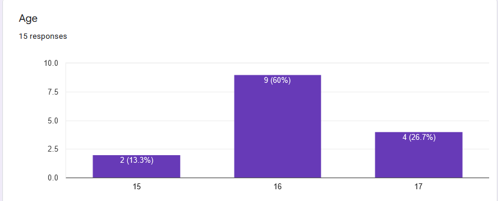
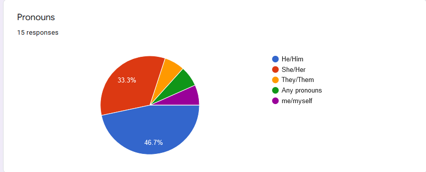

The Mental Space: Stream Analysis
The Mental Space: Stream Analysis
Stream Analysis
I. Summary of Stream
Hours before the stream we prepared the things that we needed to prepare such as the internet, devices and ourselves. Unfortunately, our group experienced so many technical difficulties such as internet connection problems, and device problems right before we started the stream. After so many hours of fixing everything we decided to just record our stream and send it to our classmates and friends.
We started first at the welcoming and introduction of the emcees and we stated the purpose of our program. After, we did our second introduction of our stream which is the “Why is it called The Mental Space Podcast?'' The emcees talked about why we came up on our stream title.
We started our part 1 of the stream which is the “The Mental Space (Part 1)” The emcees talked about 3 topics to discuss the Mental Health struggles of teens nowadays.
The topics are:
1. Is it okay to stop everything
(school) just to have a stable mental health? Is it worth our time?
2. “Is it okay not to be okay?”
3. How to handle high expectations and pressure in school from our family members?
Next, we did our part 2 of our stream which is the “The Mental Space (Part 2)” We read, talked and gave some advice about the responses on the google forms. (Google Forms).
II. Strengths Of Our Stream
The strength of our stream is that all of the members helped and participated in our stream. We gathered and brainstormed topics that might help students like us to talk about the struggles that many students can experience. We made it more relatable with our topics especially in our mental health since most of the struggles of the students nowadays are their mental health issues.
One of the strengths of our stream beside our topic is our conducted survey/google forms. It helped a lot on our topic because we can help them to express their emotions, struggles this semester, especially this pandemic. We gave them some advice that might help and cheer them up.
III. Areas of Opportunities for Our Stream (Positive outcomes of the stream based on our audience and the survey)
Based on our audience and the survey, when it comes to the positive outcomes of the stream, They said that the topic itself is clear, the emcees were communicating with the viewers, also the way how we emcees communicate with each other, that we also prioritize mental health as our podcast topic.
Upon collecting the answered surveys, we received feedback coming from our audience regarding us and the stream. Audience liked and enjoyed our stream and a lot of them said that it was great and the podcast helped them in a way. Most of them would like to recommend our stream to someone too.
IV. Analysis of the Engagement of Our Viewers
(Reference)
The effect of interactions that users have with our stream is that they get to express their feelings and emotions through the help with our podcast. Mainly talking about Mental Health Of Students can boost or increase a student or a user’s participation. That is because they can relate to our podcast that tackles experiences, struggles, opinions, and advice towards each other especially during this online class setup because of the pandemic. They can share or spread the news to others on what they’ve learned and their thoughts about “The Mental Space” podcast that they participated in.
We communicate with our viewers by relating our experiences to their experiences and we ask them what they feel right now to help them by giving some advice.We want to make them feel comfortable with our stream so we conducted a survey and ask them if our stream helped them.
V. Analysis of the Viewership of Our Stream
(Reference)
- Demographics (From the Forms Response Chart)

Question title: Age
Number of responses: 15 responses
For the Age of our participants, 2 persons are at the age of 15, 9 persons are at the age of 16, and 4 persons are at the age of 17.

Question title: Pronouns
Number of responses: 15 responses
For the gender pronouns of our participants, 7 persons are He/Him, 6 persons are She/Her, only 1 person is They/Them, 1 is Me/Myself, 1 is Any Pronouns.
- Audience Size
15
- Setting
Our podcast was conducted through an online setting on the Discord app and we recorded our stream through streamlabs.
- Knowledge of the Topic
Our audience is already familiar with our topic, which is mental health, because we conducted survey questions before our stream and we asked questions about their mental health. After our audience watched our recorded stream, we got good responses about our topic, saying they liked our topic.
- Attitude towards the Topic
The audience liked our topic, which is mental health. They said that they felt comfort and relief from us talking about our topic, some said that they liked how we prioritize mental health, and most of them said that they liked our topic.